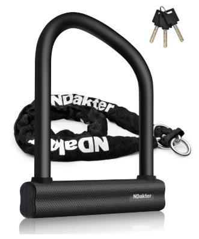

Current Exisiting Solutions
-
GPS Tags and Trackers:

- How It Works: Devices are attached to scooters or bikes and paired with a mobile app. If movement is detected without authorization, they can trigger alarms or send location updates.
- Strengths: Real-time location tracking and potential recovery of stolen items.
- Limitations: Can be removed or disabled by thieves. Often dependent on battery life or cellular signal. Doesn't prevent theft, only helps after the fact.
-
Campus Security Alerts / Timely Warnings:
- How It Works: UCSD issues alerts to students via email when thefts or suspicious activities occur.
- Strengths: Helps people stay informed and be careful.
- Limitations: Reactionary rather than preventative No real-time intervention
-
U-locks and Heavy-duty Chains:

- How It Works: Mechanical locks secure devices to bike racks or fixed objects.
- Strengths: It's easy to use it's widely available.
- Limitations: Can still be cut with tools. Do not alert users if it's being stolen.
-
Parking and Storage Facilities:
- How It Works: Designate secure areas or rooms for storing micro-mobility devices.
- Strengths: It has controlled access and sometimes the place has surveillance cameras.
- Limitations: Limited space. Hard to scale if the user increases. It's not always near by the destination buildings you're going.